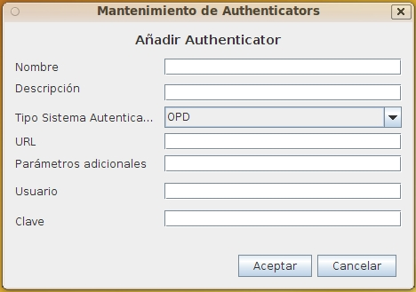

Mantenimiento Sistemas de Autenticación
Al seleccionar en el formulario de Lista Sistemas de Autenticación las opciones de Alta, Baja, Modificación o Copia de Repositorios aparecerá este formulario con diversos campos activados o desactivados.
Este formulario contiene la información:
- Nombre identificativo: Identificador del Sistemas de Autenticación cuyo valor no puede repetirse ni cambiar una vez asignado. Puede tener una longitud máxima de 32 caracteres. (Ej. "FS_Servidor1")
- Descripción del Sistemas de Autenticación: Descripción que permita interpretar el Sistemas de Autenticación. Puede tener una longitud máxima de 128 caracteres. (Ej.: "Sistema de Archivos público 2 Teras en Servidor1")
- Tipo de Sistemas de Autenticación: Indica el tipo de Sistemas de Autenticación. Es posible implementar nuevos tipos si se necesita. Actualmente los existentes son:
- OPD: OpenProdoc. En este modo, tanto el usuario como la clave (encriptada) se almacenan junto con el resto de los datos de OPD. Se verifica la clave introducida contra estos datos.
- BBDD: Base de Datos. Esta forma de autenticación realiza una conexión contra la base de datos definida en url y con el usuario y clave introducidos para conectarse. Si la BBDD acepta la conexión, OPD reconoce como autenticado al usuario.
- LDAP: El usuario se verifica contra el LDAP indicado en la url. Si la autenticación contra LDAP es correcta, OPD reconoce como autenticado al usuario.
- SO: Esta forma debe utilizarse solo para arrancar procesos en servidor o en entornos con ordenadores personales muy controlados. OPD reconoce como válido el usuario si su nombre de acceso coincide con el nombre de usuario actual de sistema operativo, sin comprobar la clave.
- URL o referencia al Sistemas de Autenticación:La URI o URL que referencia al Sistemas de Autenticación. Es necesario en Ldap y BBDD.
- Parámetros adicionales del Sistemas de Autenticación: En el caso de BBDD es el driver jdbc, en el caso de Ldap es un parámetro que podría utilizarse en: "env.put(Context.SECURITY_PRINCIPAL, "cn="+User+" "+getParam())".
- Usuario de conexión al Sistemas de Autenticación: Usuario necesario para conectarse al servidor remoto, no en FS.
- Password de conexión al Sistemas de Autenticación: clave de acceso necesaria para conectarse al servidor remoto, no en FS.

Ver: Lista Sistemas de Autenticación
Índice Ayuda OpenProdoc